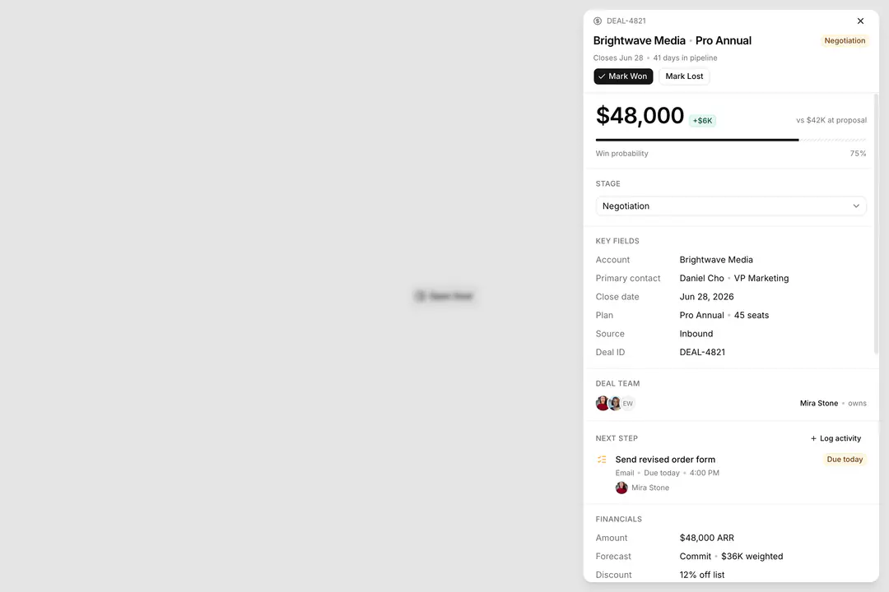

Đầu chủ mở hồ sơ căn và đọc đủ thông tin của căn và của lần chào: tầng, hướng, loại hình, pháp lý, nội thất, tài chính, tình trạng sử dụng, các lần chào trước của căn, mức đủ thông tin và lần xác nhận với chủ nhà cách đây bao lâu
_acceptance/ho-so-du-thong-tin/design.md
| Eval | Tiêu chí | Loại | Verdict | run_id | verified_at |
|---|---|---|---|---|---|
| E1 | AC-1 | script | PASS (CARRIED TỪ ROUND 2) | b984ked9y | 2026-11-13T11:57:48Z |
| E2 | AC-2 | test | PASS | minted-ho-so-du-thong-tin-E2-r3 | 2026-11-13T14:22:08Z |
| E3 | AC-3 | test | PASS | minted-ho-so-du-thong-tin-E3-r3 | 2026-11-13T14:22:08Z |
| E4 | AC-4 | test | PASS | minted-ho-so-du-thong-tin-E4-r3 | 2026-11-13T14:22:08Z |
| E5 | AC-5 | test | PASS | minted-ho-so-du-thong-tin-E5-r3 | 2026-11-13T14:22:08Z |
| E6 | AC-6 | test | PASS | minted-ho-so-du-thong-tin-E6-r3 | 2026-11-13T14:22:08Z |
| E7 | AC-7 | script | PASS (CARRIED TỪ ROUND 2) | minted-ho-so-du-thong-tin-E7-r2 | 2026-11-13T11:57:48Z |
| E8 | AC-8 | script | PASS (CARRIED TỪ ROUND 2) | minted-ho-so-du-thong-tin-E8-r2 | 2026-11-13T11:57:48Z |
| E9 | AC-9 | script | PASS (CARRIED TỪ ROUND 2) | minted-ho-so-du-thong-tin-E9-r2 | 2026-11-13T11:57:48Z |
| E10 | AC-10 | ui-check | PASS (CARRIED TỪ ROUND 2) | minted-ho-so-du-thong-tin-E10-r2 | 2026-11-13T11:57:48Z |
| E11 | AC-8 | script | PASS (CARRIED TỪ ROUND 2) | minted-ho-so-du-thong-tin-E11-r2 | 2026-11-13T11:57:48Z |
| E12 | AC-10 | script | PASS (CARRIED TỪ ROUND 2) | minted-ho-so-du-thong-tin-E12-r2 | 2026-11-13T11:57:48Z |
AC-1: Given mô hình nghiệp vụ, When chạy bộ kiểm mô hình và sinh kiểu, Then `Listing` có `furnished`, `occupantType`,
AC-2: Given dữ liệu mẫu, When dựng lần chào mẫu, Then 60 lần chào hiện tại giữ nguyên mã, trạng thái, giá và Bảng hàng
make test hoàn tất, tất cả tệp test xanh (lệnh chung với E3, E4, E5, E6).
AC-3: Given hồ sơ một căn đang mở, When đọc khối «Căn», Then thấy Mã căn, Loại căn, Diện tích, Tầng, Hướng, Toà, Dự án,
make test hoàn tất, tất cả tệp test xanh (lệnh chung với E2, E4, E5, E6).
AC-4: Given hồ sơ một căn đang mở, When nhìn đầu hồ sơ, Then dòng nơi chốn là «Dự án · Toà · Loại hình»; ba thông số
make test hoàn tất, tất cả tệp test xanh (lệnh chung với E2, E3, E5, E6).
AC-5: Given hồ sơ một căn đang mở, When đọc khối lần chào, Then khối tên «Lần chào đang mở» (hoặc «Lần chào đang xem»
make test hoàn tất, tất cả tệp test xanh (lệnh chung với E2, E3, E4, E6).
AC-6: Given một lần chào, When tính mức đủ thông tin, Then đếm năm phần theo thứ tự Giá · Nội thất · Pháp lý · Tài chính ·
make test hoàn tất, tất cả tệp test xanh (lệnh chung với E2, E3, E4, E5).
AC-7: Given một căn có nhiều lần chào, When mở hồ sơ, Then «Các lần chào của căn · N» liệt mọi lần chào của sàn trên căn
AC-8: Given hồ sơ đang mở, When tìm chỗ ghi, Then hồ sơ không có ô nhập hay nút nào đổi dữ liệu, không có đường ghi mới
AC-9: Given hồ sơ một căn có lần chào cũ đang mở ở 1440 và 360, When quét trợ năng ở sáng và tối, cả khi đang xem lần
AC-10: Given Bảng hàng đang chạy, When nhìn hồ sơ một căn có lần chào cũ ở bốn khổ, sáng và tối, Then đọc được từ trên
AC-8: Given hồ sơ đang mở, When tìm chỗ ghi, Then hồ sơ không có ô nhập hay nút nào đổi dữ liệu, không có đường ghi mới
AC-10: Given Bảng hàng đang chạy, When nhìn hồ sơ một căn có lần chào cũ ở bốn khổ, sáng và tối, Then đọc được từ trên
| Khối | Tác tử | Token đầu ra |
|---|---|---|
| S4 round 1 | 17 | 52.041 |
| S4 round 2 | 14 | 41.259 |
| S4 round 3 | 10 | 17.790 |
3 lượt chấm · tổng 111.090 token
chưa ghi quan sát production
Hồ sơ đã dựng (1440, sáng) đặt cạnh khối ReUI solution-crm-4 đã chọn ở Cổng Phạm vi. Ảnh khối sheet-11 chưa có trong kho (tải về cần chủ kho cho phép) nên chỉ để đường dẫn: reui.io/blocks → sheet-11.
